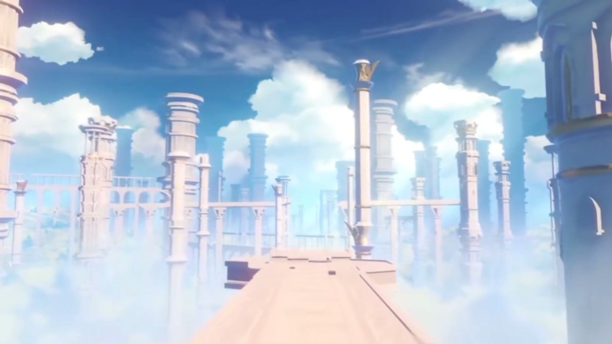
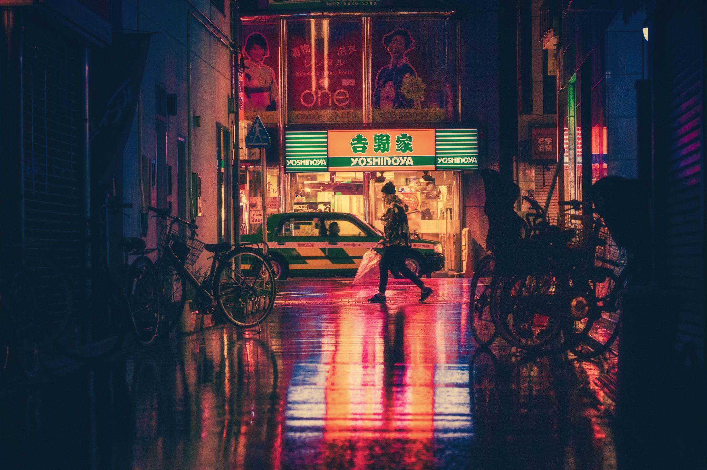

AN INVITATION FOR QIXI
鹊桥
借我一晚。
今晚，我想先认真讲一个关于相见的故事。
正在把星光搬进夜里 · 0%
THEY WAIT A YEAR · YOU ONLY NEED THIS NIGHT
牛郎织女走上鹊桥
01 / THE MAGPIE BRIDGE
银河把一年，
拉得很长。
00:01
但总有人，愿意从很远的地方走来。
他们相会了。
而我的七夕，
不打算只在旁边鼓掌。
今晚，我先去见一见自己。
02 / A NIGHT OF MY OWN
鹊桥碎成了
一条夜路。
不用选。沿着这条路往下走，今晚会自己展开。
 AI
一段不会催你睡觉的陪伴
AI
一段不会催你睡觉的陪伴

GAME 把现实暂停七秒 ANIME
借一晚别人的故事
ANIME
借一晚别人的故事

CITY 最后，走回有灯的地方
01 / 04
DOWNWARD STORY
AI / SOMEONE IS ALWAYS ONLINE
今晚的第一个陪伴，
不一定非得是人类。
选一个今晚的搭子。
GAME / PAUSE THE REAL WORLD
现实已经够难了。
今晚先暂停七秒。


按住中央，直到现实暂停。
ANIME / BORROW A STORY FOR ONE NIGHT
有人等了一整季，
才把喜欢说出口。
远景：故事还没开始，心已经先走近了一点。
01 / 05
今晚先选一帧，做自己的主角。
CITY / THE LIGHTS ARE STILL ON
这座城里有很多灯。
不是每一盏都在等谁。
选一盏灯，给今晚一个落点。
03 / BRING THE STARS HOME
原来一个人
走过的路，
也能连成一座桥。
把星星送回中央。
04 / MEETING MYSELF
牛郎织女每年
相会一次。
我今晚，先和自己见面。
QIXI IS NOT A TEST · YOU WERE HERE
A NIGHT OF MY OWN
一个人的七夕，
也不是被剩下。
是把整片夜空，重新还给自己。